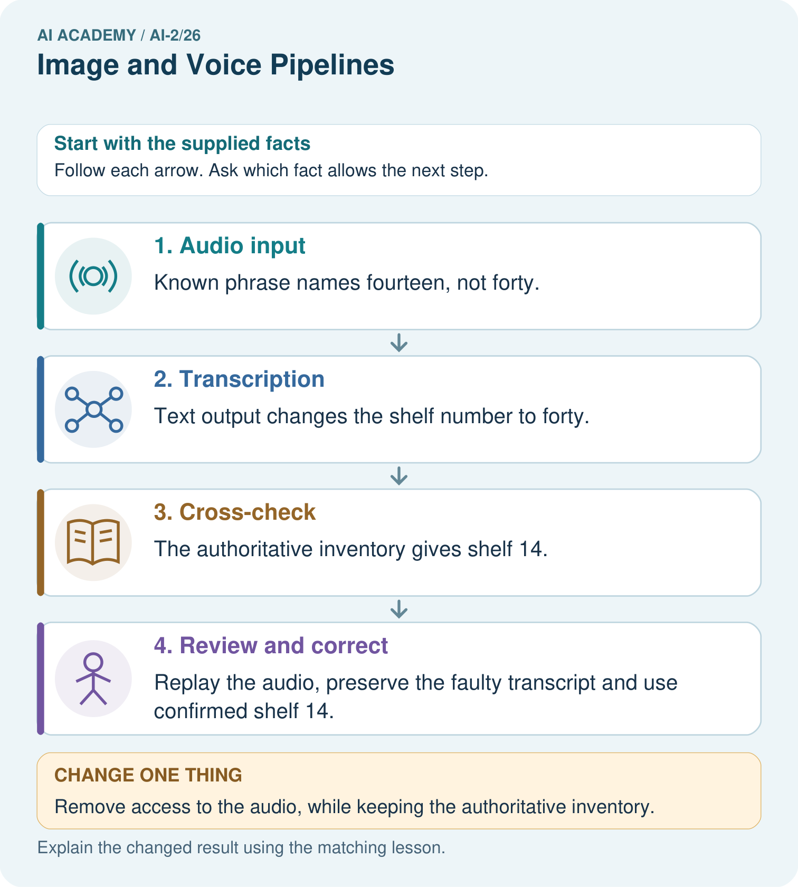
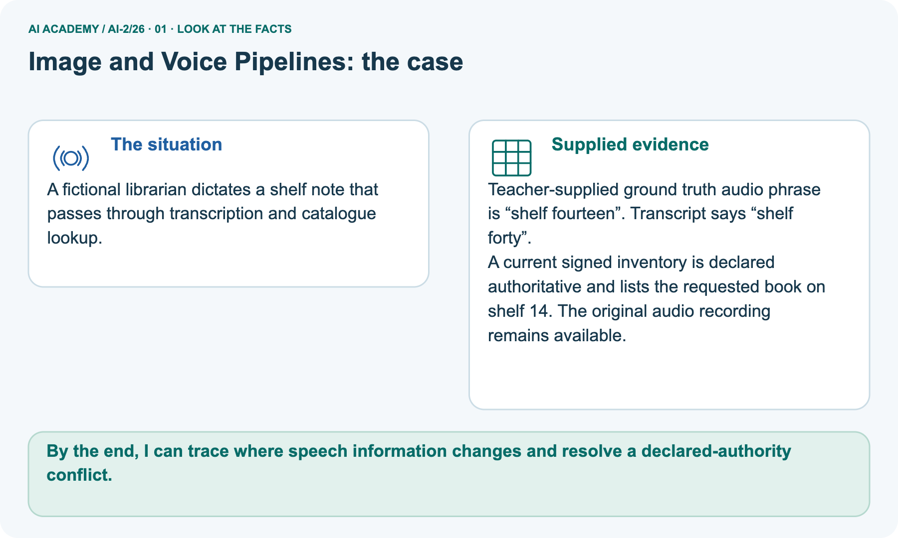
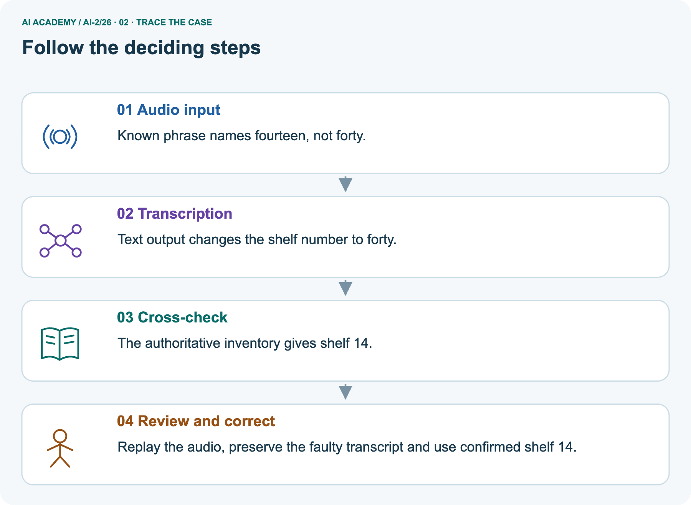
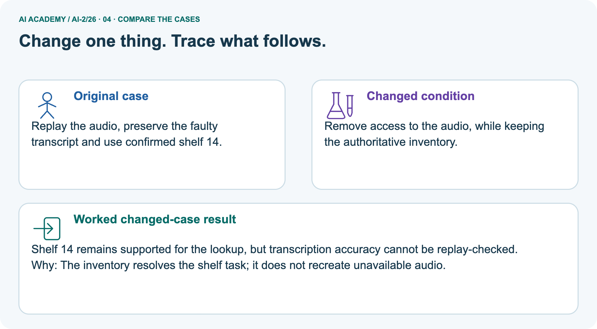
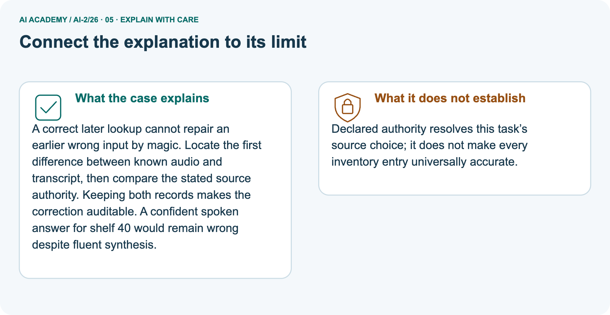
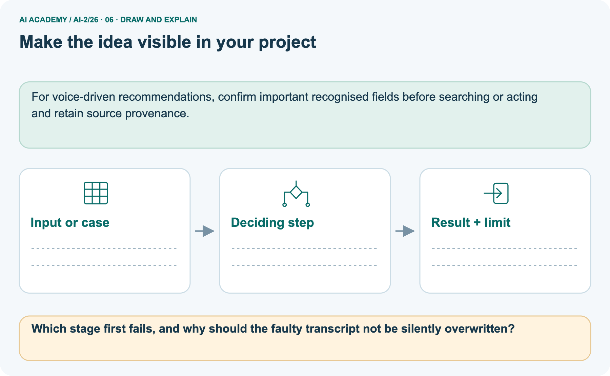

AI Academy · Level 2 · Grade 7 · Week 26 · Workbook
Image and Voice Pipelines
Learn to understand, design, build, test and explain AI systems responsibly.
Project: Transparent Book Recommender
THE CONNECTED WEEK
One connected pipeline-evidence record.
Explain stages, trace a conflict, audit a qualification and design a revealing follow-up.
Keep one habit: Keep source references, extracted fields, lookup rules, final claims and unavailable evidence separate.
Main lesson · Section 1
Recall: reconnect earlier ideas
Retrieve before opening notes.
Retrieve and explain
Try the recall before opening notes. Then use a different colour or a labelled second line to correct your explanation.
Without opening the old lesson, explain one key idea from Text as Pieces. Give an example and a mistake that the idea helps you avoid.
Without opening the old lesson, explain one key idea from Recommendation Scores. Give an example and a mistake that the idea helps you avoid.
Without opening the old lesson, explain one key idea from Repair Bias in Data. Give an example and a mistake that the idea helps you avoid.
Earlier wording, alternatives and picture transcripts
Text as Pieces
Recommendation Scores
Repair Bias in Data
Main lesson · Section 12
W1 · Explain the pipeline mechanism
Name source, transformation, task rule and output.
Your evidence record
Worked conflict: transcript15 boxes versus inventory50, no original audio and no stated authoritative record; preserve the conflict rather than select with unsupported certainty. Separate shelf case: known phrase14, transcript40, replay available and inventory14 declared authoritative for lookup. The supplied image-reading example also has reference14 versus simulated OCR40. These are different evidence records, not one combined measurement.
Explain the weekly mechanism in your own words. Use the worked scenario to name its input, decision rule and output.
Main lesson · Section 13
W2 · Trace the unresolved quantity conflict
Do not invent replay or unstated source authority.
Your evidence record
Worked conflict: transcript15 boxes versus inventory50, no original audio and no stated authoritative record; preserve the conflict rather than select with unsupported certainty. Separate shelf case: known phrase14, transcript40, replay available and inventory14 declared authoritative for lookup. The supplied image-reading example also has reference14 versus simulated OCR40. These are different evidence records, not one combined measurement.
Audio transcript reads fifteen boxes; a clear written inventory says fifty boxes. The original audio is unavailable and the assistant reports fifteen as certain.
Show the intermediate steps and give the conclusion with its scope.
Main lesson · Section 14
W3 · Restore the missing qualification
Separate a bounded supported answer from broader unverified claims.
Your evidence record
Worked conflict: transcript15 boxes versus inventory50, no original audio and no stated authoritative record; preserve the conflict rather than select with unsupported certainty. Separate shelf case: known phrase14, transcript40, replay available and inventory14 declared authoritative for lookup. The supplied image-reading example also has reference14 versus simulated OCR40. These are different evidence records, not one combined measurement.
A report omits this qualification: A stage-level accuracy or authority policy does not establish every modality agrees or every downstream claim is supported.
Explain how omitting it could change a reader's interpretation, and write an accurate replacement.
Main lesson · Section 16
W5 · Design a revealing stage-specific check
State expected evidence, fixed conditions and what remains unavailable.
Your evidence record
Worked conflict: transcript15 boxes versus inventory50, no original audio and no stated authoritative record; preserve the conflict rather than select with unsupported certainty. Separate shelf case: known phrase14, transcript40, replay available and inventory14 declared authoritative for lookup. The supplied image-reading example also has reference14 versus simulated OCR40. These are different evidence records, not one combined measurement.
For the worked scenario, propose one additional case that could reveal a failure, describe its expected outcome before running it, and explain what would need to remain fixed for a fair comparison.
Do not reuse W4 as a new final test after receiving feedback.
Main lesson · Section 4
W4 · Apply a new case independently
Keep one first attempt before hints or feedback.
Read and explain independently
Transcript says room E; a current written approval says room F. The task requires current approved room. Written approval is declared authoritative; trace the response and the transcription limit.
Keep a fair record
Attempt this case before feedback. Record any help. Earlier examples below are further practice; a case already practised with feedback cannot establish fresh transfer.
Earlier wording, alternatives and picture transcripts
Independent case: Apply a new case independently
Main lesson · Section 9
Project · Keep the decision and its evidence
Add this week’s change to your existing project record.
Your evidence record
If voice or image input is added, show each transformation and a safe fallback.
The project change and evidence I will keep
Main lesson · Section 17
Feedback · Repair and return
Keep the first attempt, the repair and a changed-case return.
Your evidence record
| Evidence | My record |
|---|---|
| Worked alone / hint / model | |
| First step I repaired and why | |
| New case checked later; date and result | |
| What I can now explain without notes | |
| One remaining question |
Revisit this idea with your teacher after a delay. Familiarity is different from explaining and using it on a changed case.
Main lesson · Section 10
Finish · Judge the evidence in your work
Point to work that supports your confidence level.
Your evidence record
- I can explain the mechanism.
- I can show evidence.
- I can handle a changed case.
- I can name a limit.
Mark each as not yet, with help or independently, and attach supporting work.
Teacher review ____________________ Next step ____________________
Reference bank and extra practice
Choose the reference that helps your next step.
Reference · Supported W2 record
Reference · Section 2
Reference · Supported W2 record
This is the same W2 attempt. Keep one response record.
Use this when helpful
Use W2: Trace the worked case for Speech pipelines and multimodal evidence. Record the answer once; the lesson and workbook refer to the same attempt.
| Given inputs | Procedure I chose | Middle steps | Result and check |
|---|---|---|---|
Extra practice · Repair the explanation
Reference · Section 3
Extra practice · Repair the explanation
Explain the deciding fact before discussing the answer.
Use this when helpful
Use the worked case for Speech pipelines and multimodal evidence. Proposed explanation: “The worked result establishes every future case”. Decide whether this explanation is supported.
Point to the step or supplied fact that decides; explain your repair if needed.
Reference · Original learning target
Reference · Section 5
Reference · Original learning target
Use this target to inspect an explanation.
Use this when helpful
A voice request says 'under 90 pages'. The transcript says 'under 19 pages'; filtering correctly finds no books. Identify the first failing stage and a useful confirmation step.
Extra practice · A complete case
Reference · Section 6
Extra practice · A complete case
Try the question before checking the worked explanation.
Use this when helpful
A voice book helper transcribes speech, extracts preference, then ranks books.
Where can a wrong suggestion begin?
Show your trace, calculation or evidence
Extra practice · A changed case
Reference · Section 7
Extra practice · A changed case
Keep this practice separate from the reserved independent attempt.
Use this when helpful
A voice helper hears find a book, converts speech to text, then searches. It writes find a cook. Which stage first failed and what should you inspect?
My practice answer and reason
Week 26 Test and reflect
Extra practice · Design a revealing test
Reference · Section 8
Extra practice · Design a revealing test
Predict before tracing or testing.
Use this when helpful
Create a changed input, boundary case or missing-information case. Write the expected answer or safe response before testing.
| Test record | My evidence |
|---|---|
| Changed input or condition | |
| Expected answer or fallback | |
| Observed result | |
| Why the result occurred |
Reference · Original target response space
Reference · Section 11
Reference · Original target response space
This teaching case is practice rather than a fresh assessment.
Use this when helpful
A voice request says 'under 90 pages'. The transcript says 'under 19 pages'; filtering correctly finds no books. Identify the first failing stage and a useful confirmation step.
Record support used: none, hint or teacher explanation.
Reference · Independent-case response copy
Reference · Section 15
Reference · Independent-case response copy
This duplicates W4. Reuse the same first-attempt record.
Use this when helpful
Transcript says room E; a current written approval says room F. The task requires current approved room. Written approval is declared authoritative; trace the response and the transcription limit.
Extra practice · Use the worked picture
Reference · Section 18
Extra practice · Use the worked picture
Keep the explanation and the support you used.
Use this when helpful
A fictional librarian dictates a shelf note that passes through transcription and catalogue lookup.
Teacher-supplied ground truth audio phrase is “shelf fourteen”. Transcript says “shelf forty”.
A current signed inventory is declared authoritative and lists the requested book on shelf 14. The original audio recording remains available.



Which stage first fails, and why should the faulty transcript not be silently overwritten?
Support used: alone / hint / worked example. This record is practice evidence.
Project connection: For voice-driven recommendations, confirm important recognised fields before searching or acting and retain source provenance.
Reference · Project portfolio record
Reference · Section 19
Reference · Project portfolio record
Extend your main project response when helpful.
Use this when helpful
Project: Transparent Book Recommender
Current milestone: Prepare the demonstration. Gather reproducible instructions, evidence, access checks and remaining limitations.
For voice-driven recommendations, confirm important recognised fields before searching or acting and retain source provenance.
| Evidence to keep | My record |
|---|---|
| This week’s input and deciding step | |
| Prediction and actual result (or labelled paper trace) | |
| One change since the previous checkpoint and why | |
| One error or limit and the next test |
Extra practice: pictures, repair and feedback
Reference · Section 20
Extra practice: pictures, repair and feedback
Attempt each question before opening its explanation. Use one browser or paper copy.
First supported question
A fictional librarian dictates a shelf note that passes through transcription and catalogue lookup.
Which labelled step matches this detail? Replay the audio, preserve the faulty transcript and use confirmed shelf 14.
1. Audio input
2. Review and correct
3. Transcription
4. Cross-check
Hint if needed: Read the steps in the pictorial case. Match the supplied detail to the stage that performs or records it.
Practice 1: explain the deciding evidence
Check the first explanation
After your attempt, compare with the supported explanation: Review and correct Replay the audio, preserve the faulty transcript and use confirmed shelf 14. A correct later lookup cannot repair an earlier wrong input by magic.
Locate the first difference between known audio and transcript, then compare the stated source authority. Keeping both records makes the correction auditable.
A confident spoken answer for shelf 40 would remain wrong despite fluent synthesis.
Changed-case question
Changed-case practice: Remove access to the audio, while keeping the authoritative inventory. Which conclusion is supported by the supplied facts?
1. Shelf 14 remains supported for the lookup, but transcription accuracy cannot be replay-checked.
2. This one example guarantees correct results for every future input.
3. We can decide the result without examining the changed input or the procedure.
Hint if needed: Use the changed condition and the deciding step in the pictorial trace. The answer must say what follows from those facts.
Practice 2: explain the deciding evidence
Check the changed case
After your attempt, compare with the supported explanation: Shelf 14 remains supported for the lookup, but transcription accuracy cannot be replay-checked.
The inventory resolves the shelf task; it does not recreate unavailable audio.
Repair and save your work
Review Text as Pieces (ai-2/25). Goal: Encode and decode text under an explicit toy vocabulary. Short practice: Why is the unknown ! at position 10 rather than position 9?. Return to this week and explain what you changed.
Review Recommendation Scores (ai-2/23). Goal: Compute a weighted score. Short practice: Why does B not become the winner when its score is largest?. Return to this week and explain what you changed.
Review Repair Bias in Data (ai-2/20). Goal: Identify selection and coverage bias. Short practice: Why must 35% be labelled an illustration rather than the measured grade-wide Yes rate?.
Return to this week and explain what you changed.
Use Download completed work in the hosted lesson to export your answers, reflections, practice feedback and code-run evidence. Open the HTML copy to read or print it.
Drafts stay in this browser when storage is available; clear drafts on a shared device.
Earlier wording, alternatives and picture transcripts
Use this supported practice once, in the browser or on paper. Keep the reserved independent assessment for a separate first attempt before teacher feedback.
Repair a missing building block
Keep your completed work
Reference · Six-picture response sheets
Reference · Section 21
Reference · Six-picture response sheets
Choose the image that helps rather than repeating all six.
01. Image and Voice Pipelines: the case



A fictional librarian dictates a shelf note that passes through transcription and catalogue lookup. Supplied facts: Teacher-supplied ground truth audio phrase is “shelf fourteen”. Transcript says “shelf forty”.
A current signed inventory is declared authoritative and lists the requested book on shelf 14. The original audio recording remains available.
Point to the given fact that matters most. Explain why it matters.
02. Follow the deciding steps



Audio input: Known phrase names fourteen, not forty. → Transcription: Text output changes the shelf number to forty. → Cross-check: The authoritative inventory gives shelf 14. → Review and correct: Replay the audio, preserve the faulty transcript and use confirmed shelf 14.
Point to each numbered stage and explain which recorded input it uses.
03. Speech pipelines and multimodal evidence — evidence trace
![Speech pipelines and multimodal evidence — evidence trace. Audio transcript reads fifteen boxes; a clear written inventory says fifty boxes. The original audio is unavailable and the assistant reports fifteen as certain. | Track source modality, segment/time references, transcription, interpretation and final claims separately. Compare conflicting evidence without assuming one modality always wins. Ask for clarification when the task needs unresolved information. | There is an unresolved quantity conflict and no audio replay. Preserve both sources and ask the responsible person; certainty is unsupported.](../assets/academy-story-ai-2-26-03.png)

Speech pipelines and multimodal evidence — evidence trace. Audio transcript reads fifteen boxes; a clear written inventory says fifty boxes.
The original audio is unavailable and the assistant reports fifteen as certain. | Track source modality, segment/time references, transcription, interpretation and final claims separately.
Compare conflicting evidence without assuming one modality always wins. Ask for clarification when the task needs unresolved information. | There is an unresolved quantity conflict and no audio replay.
Preserve both sources and ask the responsible person; certainty is unsupported.
Read the labels and values. Explain the relationship the model shows.
04. Change one thing. Trace what follows.



Original case: Replay the audio, preserve the faulty transcript and use confirmed shelf 14. Changed condition: Remove access to the audio, while keeping the authoritative inventory.
Expected result: Shelf 14 remains supported for the lookup, but transcription accuracy cannot be replay-checked. Reason: The inventory resolves the shelf task; it does not recreate unavailable audio.
Predict before checking the worked changed-case result. Name what changed and what the supplied facts allow you to conclude.
05. Connect the explanation to its limit



A correct later lookup cannot repair an earlier wrong input by magic. Locate the first difference between known audio and transcript, then compare the stated source authority.
Keeping both records makes the correction auditable. A confident spoken answer for shelf 40 would remain wrong despite fluent synthesis.
Limit: Declared authority resolves this task’s source choice; it does not make every inventory entry universally accurate.
Explain the case, then point to a limit on the claim.
06. Make the idea visible in your project



For voice-driven recommendations, confirm important recognised fields before searching or acting and retain source provenance. Draw your input, deciding step, result and limit.
Supported question: Which stage first fails, and why should the faulty transcript not be silently overwritten?
Draw your project trace and justify the deciding step using evidence.